NCERT Solutions for Class 11 Physics Chapter 11 Thermal Properties of matter are part of Class 11 Physics NCERT Solutions. Here we have given NCERT Solutions for Class 11 Physics Chapter 11 Thermal Properties of matter.
NCERT Solutions for Class 11 Physics Chapter 11 Thermal Properties of matter
Topics and Subtopics in NCERT Solutions for Class 11 Physics Chapter 11 Thermal Properties of matter:
| Section Name | Topic Name |
| 11 | Thermal Properties of matter |
| 11.1 | Introduction |
| 11.2 | Temperature and heat |
| 11.3 | Measurement of temperature |
| 11.4 | Ideal-gas equation and absolute temperature |
| 11.5 | Thermal expansion |
| 11.6 | Specific heat capacity |
| 11.7 | Calorimetry |
| 11.8 | Change of state |
| 11.9 | Heat transfer |
| 11.10 | Newton’s law of cooling |
QUESTIONS FROM TEXTBOOK
Question 11. 1. The triple points of neon and carbon dioxide are 24.57 K and 216.55 K respectively. Express these temperatures on the Celsius and Fahrenheit scales.
Answer: The relation between kelvin scale and Celsius scale is TK – 273.15 =TC => TC=TK– 273.15
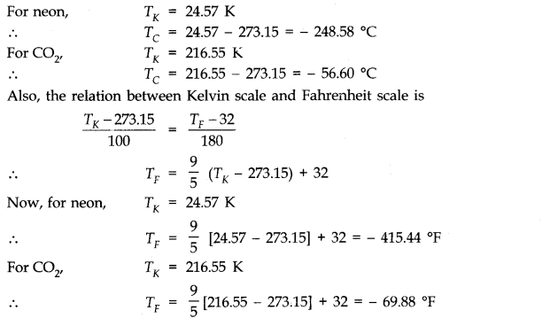
Question 11. 2. Two absolute scales A and B have triple points of water defined to be 200 A and 350 B. What is the relation between TA and TB ?
Answer: As we know, triple point of water on absolute scale = 273.16 K, Size of one degree of kelvin scale on absolute scale A
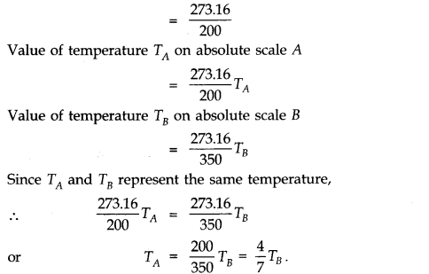
More Resources for CBSE Class 11
- NCERT Solutions
- NCERT Solutions Class 11 Maths
- NCERT Solutions Class 11 Physics
- NCERT Solutions Class 11 Chemistry
- NCERT Solutions Class 11 Biology
- NCERT Solutions Class 11 Hindi
- NCERT Solutions Class 11 English
- NCERT Solutions Class 11 Business Studies
- NCERT Solutions Class 11 Accountancy
- NCERT Solutions Class 11 Psychology
- NCERT Solutions Class 11 Entrepreneurship
- NCERT Solutions Class 11 Indian Economic Development
- NCERT Solutions Class 11 Computer Science
Question 11. 3. The-electrical resistance in ohms of a certain thermometer varies with temperature according to the approximate law: R = R0 [1 + α (T – T0)].
The resistances is 101.6 Ωat the triple-point of water 273.16 K, and 165.5 Ωat the normal melting point of lead (600.5 K). What is the temperature when the resistance is 123.4 Ω ?
Answer: Here, R0 = 101.6 Ω; T0 = 273.16 K Case (i) R1= 165.5 Ω; T1 = 600.5 K, Case (ii) R2 = 123.4 , T2 = ?
Using the relation R = R0[1 + α (T – T0)]
Case (i) 165.5 = 101.6 [1 + α (600.5 – 273.16)]
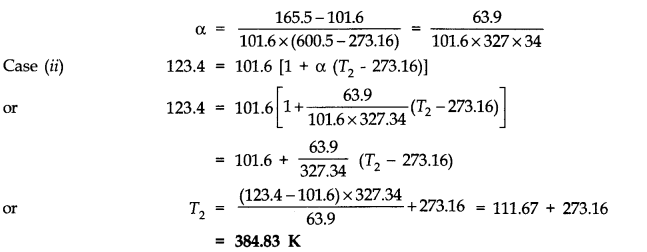
Question 11. 4. Answer the following:
(a) The triple-point of water is a standard fixed point in modem thermometry. Why ? What is wrong in taking the melting point of ice and the boiling point of water as standard fixed points (as was originally done in the Celsius scale) ?
(b) There were two fixed points in the original Celsius scale as mentioned above which were assigned the number 0 °C and 100 °C respectively. On the absolute scale, one of the fixed points is the triple-point of water, which on the Kelvin absolute scale is assigned the number 273.16 K. What is the other fixed point on this (Kelvin) Scale ?
(c) The absolute temperature (Kelvin scale) T is related to the temperature tc on the Celsius scale tc = T – 273.15
Why do we have 273.15 in this relation, and not 273.16 ?
(d) What is the temperature of the triple-point of water on an absolute scale whose unit interval size is equal to that of the Fahrenheit scale ?
Answer: (a) Triple point of water has a unique value i.e., 273.16 K. The melting point and boiling points of ice and water respectively do not have unique values and change with the change in pressure.
(b) On Kelvin’s absolute scale, there is only one fixed point, namely, the triple-point of water and there is no other fixed point.
(c) On Celsius scale 0 °C corresponds to the melting point of ice at normal pressure and the value of absolute temperature is 273.15 K. The temperature 273.16 K corresponds to the triple point of water.
(d)The Fahrenheit scale and Absolute scale are related as
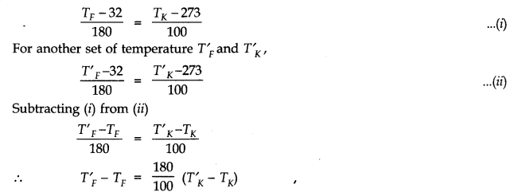
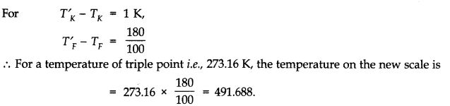
Question 11. 5. Two ideal gas thermometers A and B use oxygen and hydrogen respectively. The following observations are made:
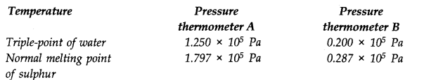
(a) What is the absolute temperature of normal melting point of sulphur as read by thermometers A and B ?
(b) What do you think is the reason behind the slight difference in answers of thermometers A and B ? (The thermometers are not faulty). What further procedure is needed in the experiment to reduce the discrepancy between the two readings ?
Answer:
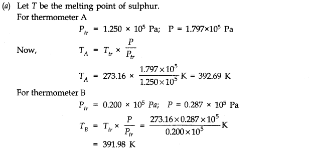
(b) The value of the melting point of sulphur found from the two thermometers differ slightly due to the reason that in practice, the gases do not behave strictly as perfect gases i.e., gases are not perfectly ideal.
To reduce the discrepency, readings should be taken for lower and lower pressures and the plot between temperature measured versus absolute pressure of the gas at triple point should be extrapolated to obtain the temperature in the limit pressure tends to zero (if P —> 0), when the gases approach ideal gas behaviour.
Question 11. 6. A steel tape 1 m long is correctly calibrated for a temperature of 27.0 °C. The length of a steel rod measured by this tape is found to be 63.0 cm on a hot day when the temperature is 45.0 °C. What is the actual length of the steel rod on that day ? What is the length of the same steel rod on a day when the temperature is 27.0 °C ? Coefficient of linear expansion of steel = 1.20 x 10-1K-1.
Answer: On a day when the temperature is 27 °C, the length of 1 cm division on the steel tape is exactly 1 cm, because the tape has been calibrated for 27 °C.When the temperature rises to 45 °C (that is, ΔT = 45 – 27 = 18 °C), the increase in the length of 1 cm division is Δl = αlΔT = (1.2 x 10-5C-1) x 1 cm x 18 °C = 0.000216 cm Therefore, the length of 1 cm division on the tape becomes 1.000216 cm at 45 °C. As the length of the steel rod is read to be 63.0 cm on the steel tape at 45 °C, the actual length of the rod at 45 °C is 63.0 x 1.000216 cm = 63.0136 cm The length of the same rod at 27 °C is 63.0 cm, because 1 cm mark on the steel tape is exactly 1 cm at 27 °C.
Question 11. 7. A large steel wheel is to befitted on to a shaft of the same material. At 27 °C, the outer diameter of the shaft is 8.70 cm and the diameter of the central hole in the wheel is, 8.69 cm. The shaft is cooled using ‘dry ice’. At what temperature of the shaft does the wheel slip on the shaft ? Assume coefficient of linear expansion of the steel to be constant over the required temperature range αsteel= 1-20 x 10-5K-1.
Answer:
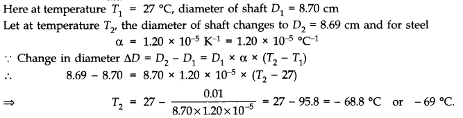
Question 11. 8. A hole is drilled in a copper sheet. The diameter of the hole is 4.24 cm at 27.0 °C. What is the change in the diameter of the hole when the sheet is heated to 227 °C ? Coefficient of linear expansion of copper = 1.70 x 10-5K-1.
Answer:
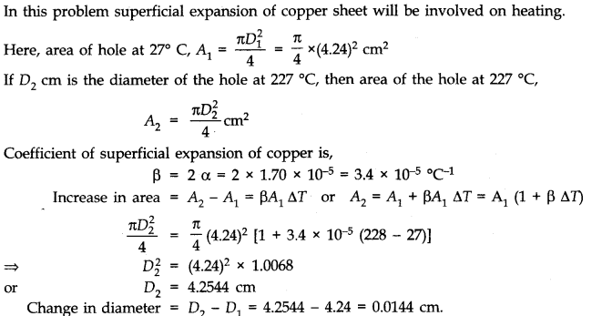
Question 11. 9. A brass wire 1.8 m long at 27 °C is held taut with little tension between two rigid supports. If the wire is cooled to a temperature of – 39 °C, what is the tension developed in the wire, if its diameter is 2.0 mm ? Co-efficient of linear expansion of brass = 2.0 x 10-5K-1; Young’s modulus of brass = 0.91 x 1011 Pa
Ans.
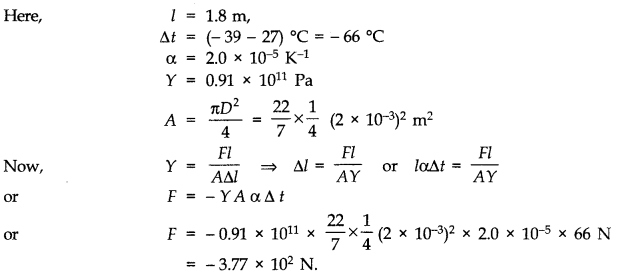
Question 11. 10. A brass rod of length 50 cm and diameter 3.0 mm is joined to a steel rod of the same length and diameter. What is the change in length of the combined rod at 250 °C, if the original lengths are at 40.0 °C ? Is there a ‘thermal stress’ developed at the junction ? The ends of the rod are free to expand (Co-efficient of linear expansion of brass = 2.0 x 10-5 °C-1, steel = 1.2 x 10-5 °C-3.
Ans.
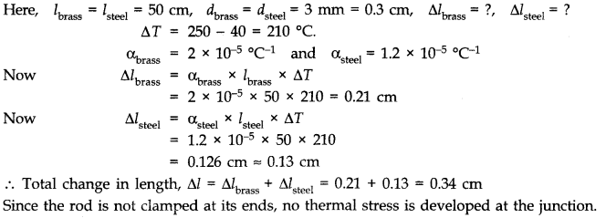
Question 11. 11. The coefficient of volume expansion of glycerine is 49 x 10-5K-1. What is the fractional change in its density for a 30 °C rise in temperature ?
Ans.
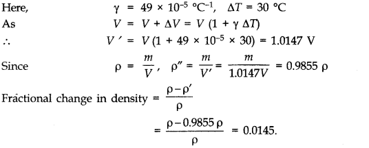
Question 11. 12. A 10 kW drilling machine is used to drill a bore in a small aluminium block of mass 8.0 kg. How much is the rise in temperature of the block in 2.5 minutes, assuming 50% of power is used up in heating the machine itself or lost to the surroundings? Specific heat of aluminium = 0.91 J g-1 K-1 .
Answer: Power = 10 kW = 104 W
Mass, m=8.0 kg = 8 x 103 g
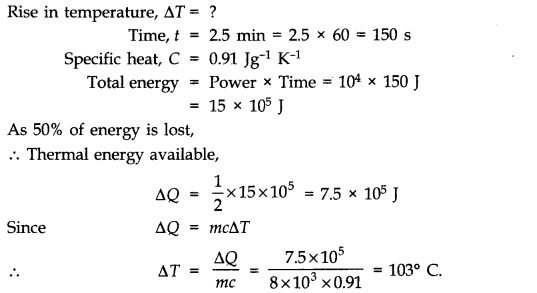
Question 11. 13. A copper block of mass 2.5 kg is heated in a furnace to a temperature of 500°C and then placed on a large ice block. What is the maximum amount of ice that can melt? Specific heat of copper is 0.39 Jg-1°C-1. Heat of fusion of water = 335 Jg-1.
Answer:
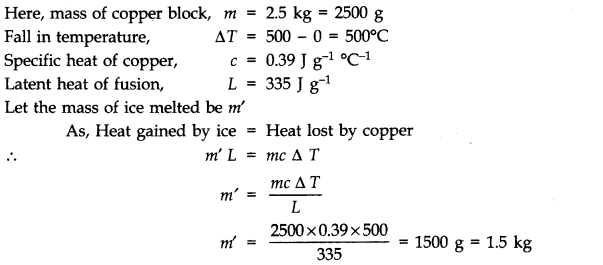
Question 11. 14. In an experiment on the specific heat of a metal, a 0.20 kg block of the metal at 150°C is dropped in a copper calorimeter (of water equivalent 0.025 kg) containing 150 cm3 of water at 27 °C. The final temperature is 40° C. Compute the specific heat of the metal. If heat losses to the surroundings are not negligible, is your answer greater or smaller than the actual value for specific heat of the metal?
Answer: Mass of metal block, m = 0.20 kg = 200 g
Fall in the temperature of metal block,
ΔT = (150 – 40) °C = 110 °C
If C be the specific heat of metal, then heat lost by the metal block = 200 x C x 110 cal Volume of water = 150 cm3
mass of water = 150 g
Increase in temperature of water = (40 – 27) °C = 13°C
Heat gained by water = 150 x 13 cal Water equivalent of calorimeter, w = 0.025 kg = 25g
Heat gained by calorimeter,
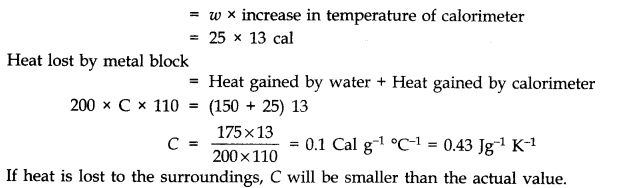
Question 11. 15. Given below are observations on molar specific heats at room temperature of some common gases.
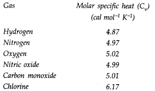
The measured molar specific heats of these gases are markedly different from those for mono atomic gases. Typically, molar specific heat of a mono atomic gas is 2.92 cal/mol K. Explain this difference. What can you infer from the somewhat larger (than the rest) value for chlorine ?
Answer: The gases which are listed in the above table are diatomic gases and not mono atomic gases. For diatomic gases, molar specific heat =5/2 R = 5/2 x 1.98 = 4.95, which agrees fairly well with all observations listed in the table except for chlorine. A mono atomic gas molecule has only the translational motion. A diatomic gas molecule, apart from translational motion, the vibrational as well as rotational motion is also possible. Therefore, to raise the temperature of 1 mole of a diatomic gas through 1°C, heat is to be supplied to increase not only translational energy but also rotational and vibrational energies. Hence, molar specific heat of a diatomic gas is greater than that for mono atomic gas. The higher value of molar specific heat of chlorine as compared to hydrogen, nitrogen, oxygen etc. shows that for chlorine molecule, at room temperature vibrational motion also occurs along with translational and rotational motions, whereas other diatomic molecules at room temperature usually have rotational motion apart from their translational motion. This is the reason that chlorine has somewhat larger value of molar specific heat.
Question 11. 16. (a) At what temperature and pressure can the solid, liquid and vapour phases of CO2 co-exist in equilibrium ?
(b) What is the effect of decrease of pressure on the fusion and boiling point of CO2 ?
(c) What are the critical temperature and pressure for CO2 ? What is their significance 1
(d) Is CO2 solid, liquid or gas at (a) – 70 °C under 1 atm (b) – 60 °C under 10 atm (c) 15°C under 56 atm?
Answer: (a) At the triple point, temperature = – 56.6 °C and pressure = 5.11 atm.
(b) Both the boiling point and freezing point of CO2 decrease if pressure decreases.
(c) The critical temperature and pressure of CO2 are 31.1°C and 73.0 atm respectively. Above this temperature, CO2 will not liquefy/even if compressed to high pressures.
(d) (i) The point (- 70 °C, 1.0 atm) lies in the vapour region. Hence, CO2 is vapour at this point.
(ii) The point (- 60 °C, 10 atm) lies in the solid region. Hence, CO2 is solid at this point.
(iii) The point (15 °C, 56 atm) lies in the liquid region. Hence, CO2 is liquid at this point.
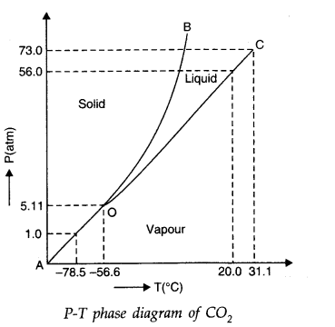
Question 11. 17. Answer the following questions based on the P – T phase diagram of CO2 (Fig. of question 17 given above)
(a) CO2 at 1 atm pressure and temperature – 60 °C is compressed isothermally. Does it go through a liquid phase ?
(b) What happens when CO2 at 4 atm pressure is cooled from room temperature at constant pressure ?
(c) Describe qualitatively the changes in a given mass of solid CO2 at 10 atm pressure and temperature – 65 °C as it is heated up at room temperature at constant pressure.
(d) CO2 is heated to a temperature 70 °C and compressed isothermally. What changes in its properties do you expect to observe ?
Answer: (a) No, the CO2 does not go through the liquid phase. The point (1.00 atm, – 60°C) is to the lift of the triple-point O and below the sublimation curve OA. Therefore, when CO2 is compressed at this point at constant temperature, the point moves perpendicular to the temperature-axis and enters the solid phase region. Hence, the CO2 vapour condenses to solid directly without going through the liquid phase.
(b) CO2 at 4.0 atm pressure and room temperature (say, 27 °C) is in vapour phase. This point (4.0 atm, 27°C) lies below the vaporation curve OC and to the right of the triple point O. Therefore, when CO2 is cooled at this point at constant pressure, the point moves perpendicular to the pressure-axis and enters the solid phase region. Hence, the CO2 vapour condenses directly to solid phase without going through the liquid phase.
(c) When the solid CO2 at – 65 °C is heated at 10 atm pressure, it is first converted into liquid. A further increase in its temperature brings it into the vapour phase. If a horizontal line at P = 10 atm is drawn parallel to the T-axis, then the points of intersection of line with the fusion and vaporization curve give the fusion and boiling points at 10 atm.
(d) Above 31.1°C, the gas cannot be liquefied. Therefore, on being compressed isothermally at 70°C, there will be no transition to the liquid region. However, the gas will depart, more and more from its perfect gas behaviour with the increase in pressure.
Question 11. 18. A child running a temperature of 101°F is given an antipyrin (i.e., a medicine that lowers fever) which causes an increase in the rate of evaporation of sweat from his body. If the fever is brought down to 98° F in 20 minutes, what is the average rate of extra evaporation caused by the drug ? Assume the evaporation mechanism to be the only way by which heat is lost. The mass of the child is 30 kg. The specific heat of human body is approximately the same as that of water, and latent heat of evaporation of water at that temperature is about 580 cal g-1.
Answer:
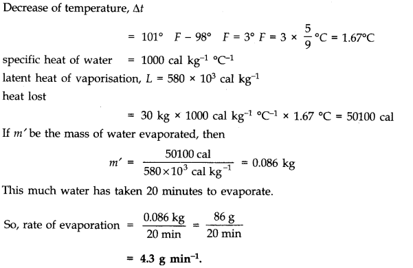
Question 11. 19. A ‘thermacole’ icebox is a cheap and efficient method for storing small quantities of cooked food in summer in particular. A cubical icebox of side 30 cm has a thickness of 5.0 cm. If 4.0 kg of ice is put in the box, estimate the amount of ice remaining after 6 h. The outside temperature is 45°C, and coefficient of thermal conductivity of thermacole is 0.01 Js-1 m-1 °C-1 [Heat of fusion of water = 335 x 103 J kg-1 ].
Answer: Each side of the cubical box (having 6 faces) is 30 cm = 0.30 m. Therefore, the total surface area’ of the icebox exposed to outside air is A = 6 x (0.30 m)2 = 0.54 m2. The thickness of the icebox is d = 5.0 cm = 0.05 m, time of exposure t = 6h = 6 x 3600 s and temperature difference T1 – T2 = 45°C – 0°C = 45°C.
.•. Total heat entering the icebox in 6 h is given by
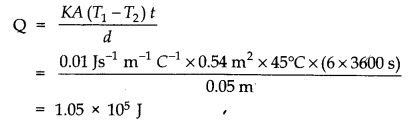
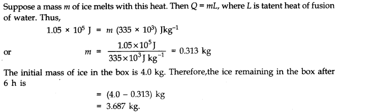
Question 11. 20. A brass boiler has a base area 0.15 m2 and thickness 1.0 cm. It boils water at the rate of 6.0 kg/ min when placed on a gas stove. Estimate the temperature of the part of the flame in contact with the boiler. Thermal conductivity of brass = 109 Js-1 m-1 K-1.(Heat of vaporization of water = 2256 x 103 J kg-1 )
Answer:
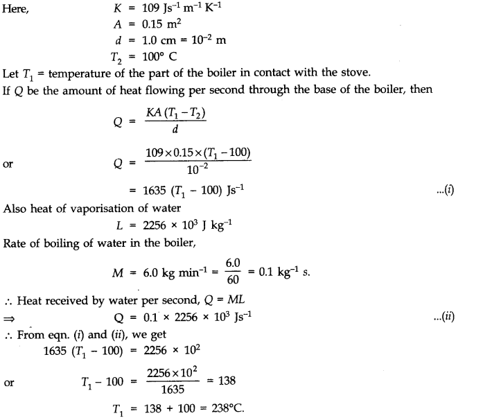
Question 11. 21. Explain why:
(a) a body with large reflectivity is a poor emitter.
(b) a brass tumbler feels much colder than a wooden tray on a chilly day.
(c) an optical pyrometer (for measuring high temperatures) calibrated for an ideal black body radiation gives too low a value for the temperature of a red hot iron piece in the open, but gives a correct value for the temperature when the same piece is in the furnace.
(d) the earth without its atmosphere would be inhospitably cold.
(e) heat systems based on circulation of steam are more efficient in warming a building than those based on circulation of hot water.
Answer: (a) According to Kirchh off’s law of black body radiations, good emitters are good absorbers and bad emitters are bad absorbers. A body with large reflectivity is a poor absorber of heat and consequently, it is also a poor emitter.
(b) Brass is a good conductor of heat, while wood is a bad conductor. When we touch the brass tumbler on a chilly day, heat starts flowing from our body to the tumbler and we feel it cold. However, when the wooden tray is touched, heat does not flow from our hands to the tray and we do not feel cold.
(c) An optical pyrometer is based on the principle that the brightness of a glowing surface of a body depends upon its temperature. Therefore, if the temperature of the body is less than 600°C, the image formed by the optical pyrometer is not brilliant and we do not get the reliable result. It is for this reason that the pyrometer gives a very low value for the temperature of red hot iron in the open.
(d) The lower layers of earth’s atmosphere reflect infrared radiations from earth back to the surface of earth. Thus the heat radiation received by the earth from the sun during the day are kept trapped by the atmosphere. If atmosphere of earth were not there, its surface would become too cold to live.
(e) Steam at 100°C possesses more heat than the same mass of water at 100°C. One gram of steam at 100°C possesses 540 calories of heat more than that possessed by 1 gm of water at 100°C. That is why heating systems based on circulation of steam are more efficient than those based on circulation of hot water.
Question 11. 22. A body cools from 80 °C to 50°C in 5 minutes. Calculate the time it takes to cool from 60 °C to 30°C. The temperature of the surroundings is 20 °C.
Answer:
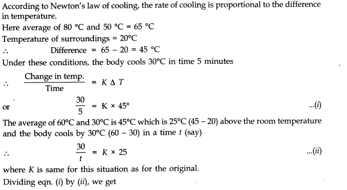
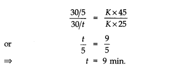
NCERT Solutions for Class 11 Physics All Chapters
- Chapter 1 Physical World
- Chapter 2 Units and Measurements
- Chapter 3 Motion in a Straight Line
- Chapter 4 Motion in a plane
- Chapter 5 Laws of motion
- Chapter 6 Work Energy and power
- Chapter 7 System of particles and Rotational Motion
- Chapter 8 Gravitation
- Chapter 9 Mechanical Properties Of Solids
- Chapter 10 Mechanical Properties Of Fluids
- Chapter 11 Thermal Properties of matter
- Chapter 12 Thermodynamics
- Chapter 13 Kinetic Theory
- Chapter 14 Oscillations
- Chapter 15 Waves
We hope the NCERT Solutions for Class 11 Physics Chapter 11 Thermal Properties of matter help you. If you have any query regarding NCERT Solutions for Class 11 Physics Chapter 11 Thermal Properties of matter, drop a comment below and we will get back to you at the earliest.